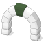
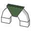
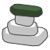
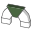
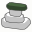

keystone mark: arch (v6 wire, then v5)
An isometric arch: two piers in two courses each, six ring stones and the moss keystone standing proud at the crown. Each stone is a slab built as cairn's are: rings up the side, faces toned by normal on an eight-step ramp that holds cairn's stone and moss tones, seeded so no two match. Pier courses are rounded; ring stones are square at the joints so neighbours close on one plane. Faces of a step share one fill, so no seams; the only dark stroke is each stone's silhouette at cairn's weight, and the piers cast one flat shadow. The favicon stays the flat form. Every image is an SVG at its own size except the favicon PNGs, which are 1:1.
v6: thin wire, beside v5
v6 keeps v5's arch, faceted stones and the keystone's drop, and draws them as cairn.dunn.dev's home cover is drawn: the silhouette edge is 0.33% of the figure's width (0.2 of the 60-unit arch, 1.25 of cairn's 378), faces keep their tones with a hair seam, and the ground is a dash-dot plate in the 0.3 hairline. The drop runs on cairn's timing (200 ms lead, 820 ms, lands at 56%, one small lift, settles) and plays once; reduced motion shows the finished frame.




v5 hero: the keystone drops into the crown
v5 mark

favicon

keystone
cairn

Generated by arch/mark.mjs; the voussoir and keyed directions stay in their directories, off this page.